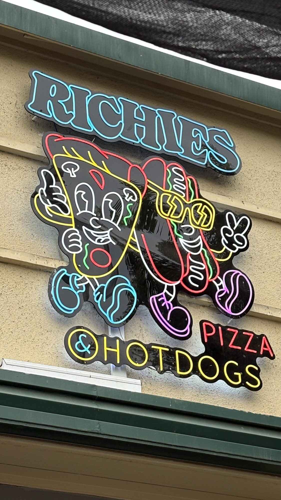
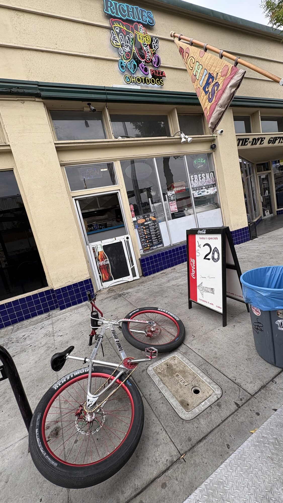
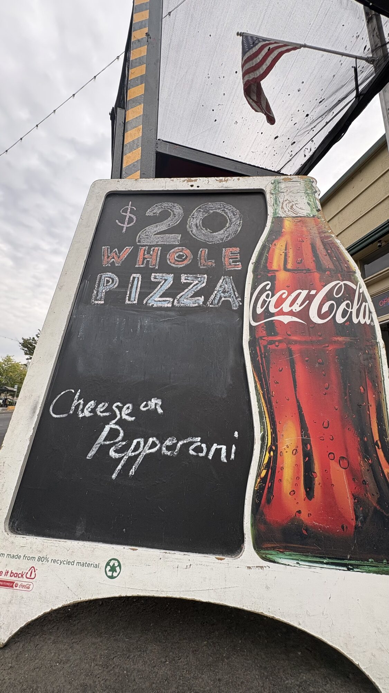
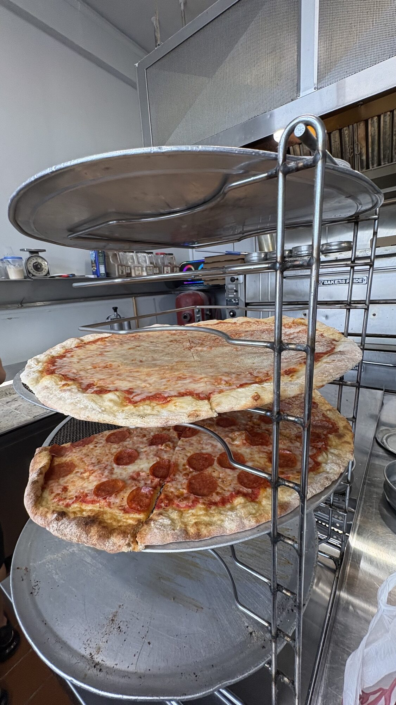
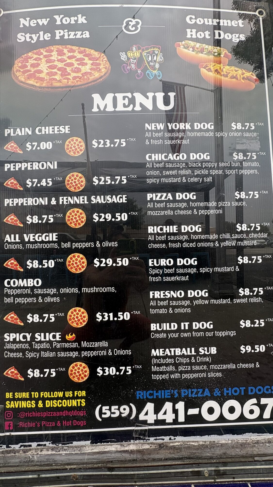
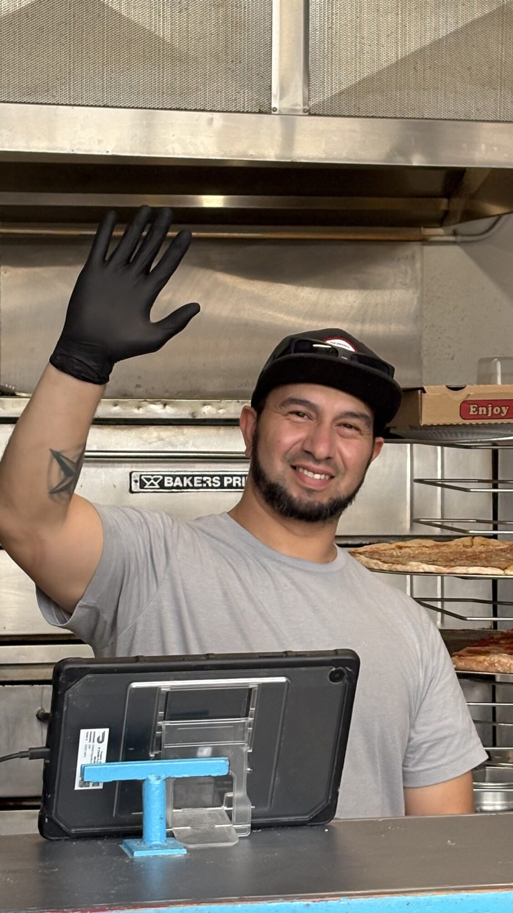
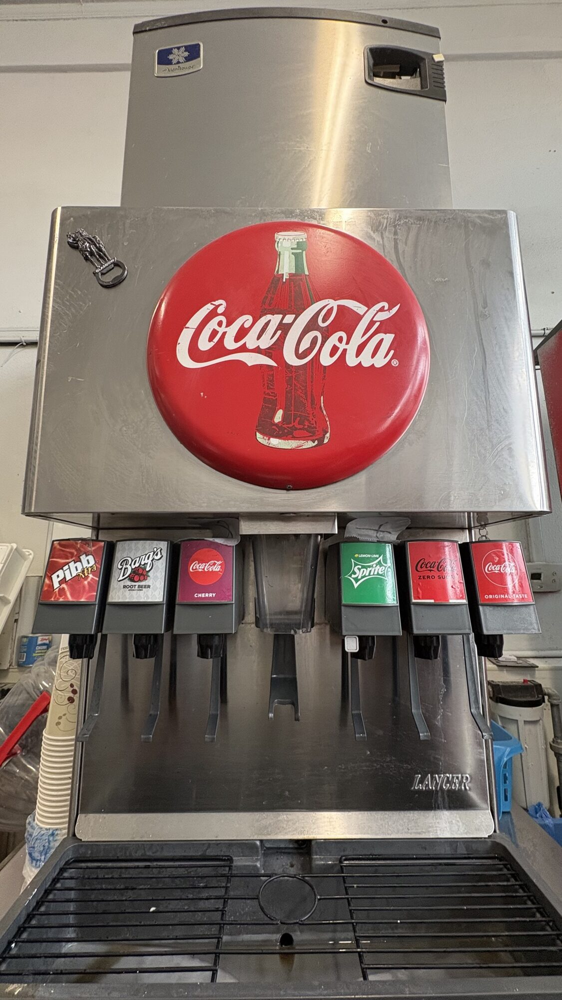
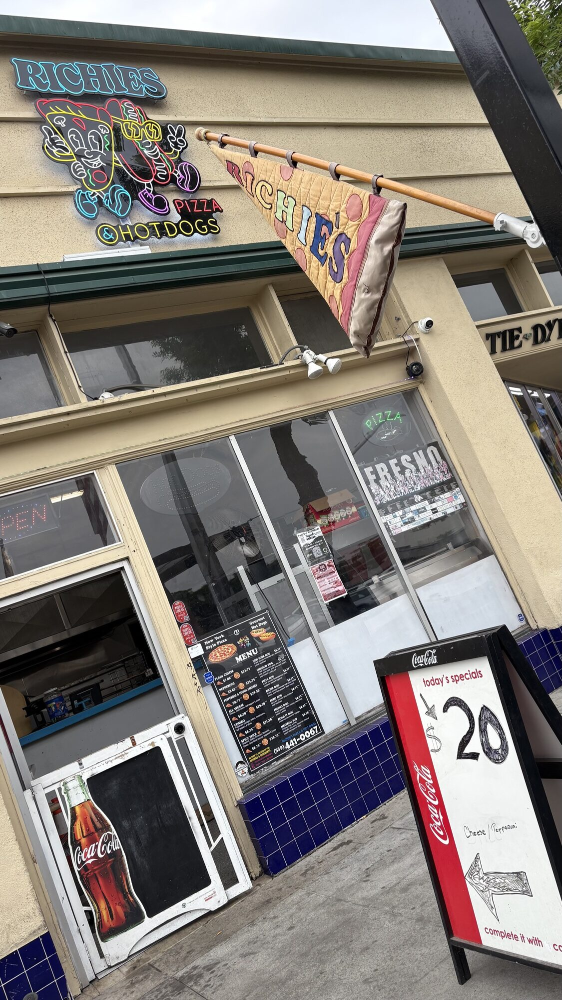

You do not need a map once you see it. On Olive, under the green trim, a quilted pizza slice hangs off a wooden pole like a campaign banner. Neon characters walk the wall above the door. One is a slice. One is a dog. Both of them are having a better night than most of Fresno.
Richie’s Pizza & Hot Dogs is the kind of Tower place people describe with a shrug and a smile. Not a concept. Not a rebrand. A window, a rack of pies, a chalkboard that still says twenty dollars for a whole cheese or pepperoni, and a crew that will wave at you from behind the oven.

The sidewalk pitch
The storefront is cream stucco, blue tile, and a Coca-Cola sandwich board. Today’s special is written in marker, not marketing. Twenty dollars. Whole pizza. Cheese or pepperoni. Complete it with a Coke if you want the full old-school loop.
A bike leans against the rack like it has been here before. India’s Oven sits next door. Tie-dye gifts glow a few doors down. This is the Tower District doing what it does: a few businesses that still look like they belong to the block.


The $20 pie
Regular whole pies on the board run higher. Cheese lists at $23.75. Pepperoni at $25.75. The sidewalk special undercuts that and keeps the place honest. You can feed a porch, a rehearsal, or a late walk home without turning it into an event.
Inside the rack, the pies look like they were built to be folded. Blistered edge. Sauce that stays in its lane. Pepperoni cupped and rendered. This is New York style as Fresno actually eats it: thin enough to carry, big enough to argue about.

The menu is two cities and one hometown
Left column is pizza. Right column is dogs. That is the whole thesis.
Slices run from a plain cheese at $7.00 to the spicy slice at $8.75, loaded with jalapeños, Tapatio, Parmesan, mozzarella, spicy Italian sausage, pepperoni, and onion. Combo and fennel-sausage pies sit in the middle. All veggie is onions, mushrooms, bell peppers, and olives if you want the meatless lane without a lecture.
The dogs keep the same price and change the city. New York with homemade spicy onion sauce and sauerkraut. Chicago with the poppy seed bun, sport peppers, and celery salt. Pizza dog if you refuse to choose. Richie dog with chili, cheddar, onion, and yellow mustard. Euro dog if you want heat and kraut. Fresno dog if you want mustard, relish, tomato, and onion and you want it named after home. Build-it starts at $8.25. Meatball sub comes with chips and a drink.

The wave
A man in a gray shirt and black cap raises a gloved hand from behind the tablet. Oven at his back. Pies on the rack. That is the whole customer-service manual. Smile first. Then the slice.
Tower places live or die on whether the window still feels human after midnight. Richie’s still does. Reviews keep circling the same words: friendly, fast, late, huge slices, actual herbs in the sauce. People coming off a show at Roger Rocka’s or a walk down Olive treat it like a checkpoint, not a destination restaurant. That is a compliment.

Coke machine as civic furniture
The fountain is a Lancer with the big red bottle badge. Pibb Xtra. Barq’s. Cherry Coke. Sprite. Coke Zero. Original taste. The specials board even tells you to complete the pie with a Coke. Some places hide the soda. Richie’s puts it on the sidewalk.

Find it
Richie’s Pizza & Hot Dogs
844 E Olive Ave
Fresno, CA 93728
Tower District, between Fulton and Wishon
(559) 441-0067
Follow it
Instagram: @richiespizzaandhotdogs
Facebook: Richie’s Pizza & Hot Dogs
Ask about the $20 whole pie before you order the regular board price.
Hours shift with the week. Call or look at the window before you ride over.
Why this block still matters
The High Tower District does not need another place that looks like a brand deck. It needs rooms that stay open when the theater lets out, that sell food you can hold in one hand, that keep a phone number on the glass instead of a QR maze.
Richie’s has been that kind of room for a long time. Four decades of Tower nights sit behind the neon. The flag is a little weathered. The chalkboard is a little scuffed. The pies on the rack are not.
If you live in 93728, or you are just passing through Olive, this is the easy good decision. Walk up. Wave back. Take the twenty-dollar pie if it is on the board. Fold the slice. Leave the bike where it is until you are done.

Sources
- On-site photographs, 844 E Olive Ave, Fresno, August 27, 2026
- Posted window menu and sidewalk specials board
- Public listings for address and phone: (559) 441-0067
- Instagram @richiespizzaandhotdogs